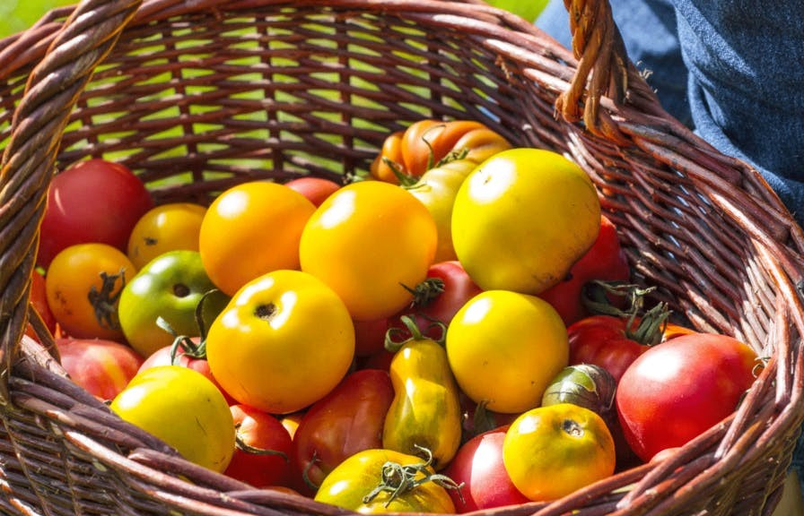
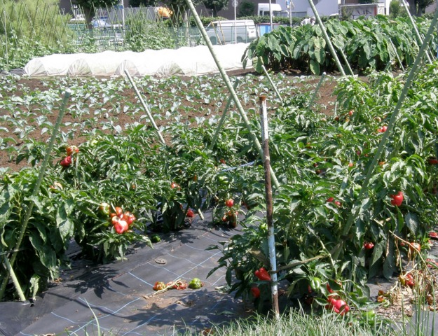
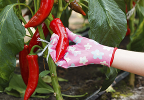
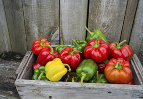
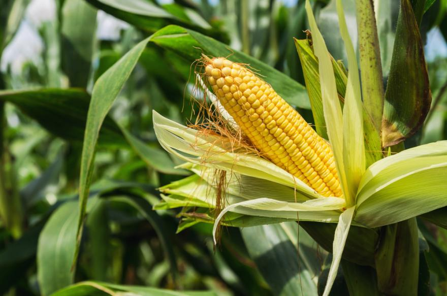
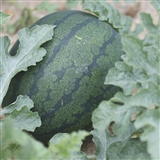

La tomate est un délicieux fruit-légume, idéal à cultiver au potager durant l’été.
En résumé , ce qu’il faut savoir avant de commencer :
Nom : Solanum lycopersicon
Famille : Solanacées
Type : Fruit/Légume
Hauteur : 80 à 140 cm
Exposition : Ensoleillée
Sol : Léger, assez riche
Récolte : Eté, laisser mûrir sur le pied.
conseil pour la Culture des tomates
11 conseils pour réussir la culture des tomates à coup sûr Depuis le semis, qui peut être laissé à des professionnels, jusqu’à la protection contre les intempéries, les techniques et les astuces de culture de la tomate ne manquent pas. Arrosage, plantation, taille… Détente Jardin vous dévoile 11 secrets pour cultiver vos tomates comme un vrai pro. De judicieux conseils à prendre pour réaliser de bonnes récoltes cette année.
La diversité avant tout ! Mettez toutes les chances de votre côté et faites confiance a la multiplicité. Faire pousser plusieurs variétés de tomates
Quel plaisir de se régaler avec des bonnes tomates pendant plusieurs mois. Essayez plusieurs variétés, de tailles, formes, couleurs et goûts différents. Vous mulipliez ainsi les chances de vous régaler !
Quand planter des tomates coeur de boeuf ?
Particulièrement appréciées pour leur chair généreuse , les tomates coeur de boeuf font partie des chouchous des jardiniers. Cette variété précoce se sème sous abri dès mars-avril et se repique une fois le risque de gelées écarté. En général, cela correspond aux alentours de la mi-mai.
En combien de temps poussent les tomates ?
Du semis à la récolte, il faut compter à minima 4 mois, voire 5 mois si le soleil s'est fait discret. La plupart du temps, les premières récoltes ont lieu à la fin du mois de juillet, août étant un mois de récolte généreux pour les tomates.
Plants du commerce ou «maison», qui gagne ?
Les plants du commerce : on ne peut pas faire plus pratique car on ne les achète que lorsqu’on est prêt à les planter. Mais ils peuvent être chers (jusqu’à 4 € la pièce !) et la diversité n’est pas toujours au rendez-vous, surtout si l’on se décide un peu tard.
Le poivron fait bien plus que d’ajouter
de la couleur dans un potager,
c’est aussi un fruit délicieusement sucré
et juteux que vous prendrez plaisir à récolter et qui, cru ou cuit, agrémentera
une foule de bons plats. Le poivron poussera très bien et à peu près sans aide dans
un endroit chaud et ensoleillé. Si vous habitez dans une région plus froide,
la culture en serre donnera sans doute de meilleurs résultats.
conseil pour la Culture des poivron
La culture du poivron ressemble beaucoup à celle de la tomate. Mais son semis est plutôt délicat à réussir : il lui faut en effet une température d'environ 28°C pour germer. Et comme son développement est plutôt lent, il faut le semer dès mars pour envisager un repiquage au potager vers fin mai / début juin. Autrement dit : le semis n'est ouvert qu'aux jardiniers bien équipés (mini-serre ou tapis chauffants par exemple)... et l'énergie nécessaire rend l'opération peu écologique.
Où planter le poivron ?
Choisissez un emplacement en plein soleil. Le poivron voisine bien avec les autres légumes. Tomate et aubergine sont de la même famille, celle des Solanacées ; le basilic constitue également un bon compagnon.
Entretien
Il importe de bien arroser les plants, en particulier par temps chaud ou si vous effectuez la culture en pot; vous devrez peut-être procéder à des arrosages quotidiens. Dès l’apparition de fleurs, commencez à fertiliser vos plants au moyen d’un engrais liquide, par exemple un engrais à tomates. Les plants résistent en général assez bien aux parasites et aux maladies. Ils peuvent toutefois être la proie des pucerons; vous devriez pouvoir vous en débarrasser assez facilement en rinçant les feuilles. D’autres problèmes pourraient menacer vos plants s’ils sont exposés au gel. En cas d’avertissement de gel tardif, prenez la peine de couvrir vos plants pour les protéger.
Récolte
un plant productif donnera entre 3 et 8 poivrons. Vous pouvez les récolter dès qu’ils sont verts et luisants, mais si vous les laissez mûrir sur le plant, ils deviendront jaunes, orangés, puis rouges. Plus le poivron demeure longtemps sur le plant, plus il sera sucré; le rendement risque toutefois d’être moindre. Pour cueillir le poivron, utilisez un sécateur ou un couteau bien affûté pour couper la tige (si vous tirez le poivron pour le détacher, vous risquez d’abîmer les branches du plant). Selon la variété plantée et les conditions climatiques, vous pourrez récolter vos poivrons dès le mois d’août jusqu’en septembre.
Les caractéristiques du maïs
type :plante potagère
Hauteur :jusqu'à 5m
Couleur des fleurs :jaune, violet, gris
Expositionsouhaitée, ensoleillé
Type de solsableux
assainissant:non
Maladies : La jaunisse, l'anthracnose,
les altises, la noctuelle, le ver blanc
VariétésZea mays amylacea, Zea mays ceratina,
conseil pour la Culture du maïs
Souvent plantés dans les champs, le maïs peut aussi trouver sa place dans votre jardin ou votre potager. De croissance rapide et facile, il présente de nombreux atouts nutritionnels. Découvrez vite comment le faire pousser et quelle est son utilisation dans un jardin !
Appartenant à la famille des poacées, le maïs est une plante annuelle cultivée d'une part pour ses grains riches en amidon, et d'autre part comme une plante fourragère. Originaire du Mexique où il était le met de base des populations amérindiennes avant le XVIème siècle, la plante maïs est aujourd'hui présente dans près de 150 pays et s'élève au rang de première céréale cultivée au monde devant le riz et le blé. Le maïs (Zea mays) fait partie de la famille des Poacées.
plantation du maïs
Alors que la plupart des céréales privilégient une plantation à l'automne ou au printemps, le maïs (Zea mays) se cultive en été. Il réclame en effet des températures minimales de 10°C pour sa germination et de 18°C pour sa floraison. Capable de s'adapter à différents types de sols, le maïs ne pourra cependant pas résister à un manque d'eau. De ses besoins en eau découlera son rendement. Le maïs demande un sol profond, léger, frais et riche en humus. Lors de sa préparation, apportez du fumier ou du compost l'automne précédent le semis. Cela permettra d'enrichir le sol. Il existe plusieurs manières de semer votre maïs : en ligne en poquet en intérieur Pour une plantation de maïs en ligne, il faut creuser des sillons de 3cm de profondeur. Semez clair, en rangs écartés de 70cm. Recouvrez alors les graines de terre fine, et après la levée, éclaircissez à 20-25cm. Faites attention aux oiseaux, qui peuvent venir voler les graines de maïs, même quand elles ont germées. Si vous décidez d'opter pour un semis en poquet, semez 2 grains par godet tous les 25cm. Recouvrez ensuite de terre fine et conservez uniquement le plus beau plant après la levée. Il est également possible de planter le maïs en intérieur. Semez 3 ou 4 graines par godet, mélangés avec du terreau pour semis additionné d'un peu de compost. Il suffira ensuite de planter le plant le plus développé par la suite. Il est recommandé de ne planter qu'une seule variété de maïs à la fois. Si vous voulez planter 2 variétés, optez pour des variétés à la floraison décalée. Si votre jardin se trouve à moins de 300m d'un champ de maïs, il faudra le protéger au moment de la florais
Les pastèques auraient été introduites par les croisés qui les découvrirent chez les Arabes. Cette Cucurbitacée fait aujourd' hui partie des fruits emblématiques de la saison estivale ! Les pastèques sont principalement cultivées dans le sud de la France. Equipés d'une serre, les jardiniers installés plus au nord pourront tout de même déguster ce fruit à la saveur sucrée et riche en eau !
Réussir le semis de pastèques
Exposition
Soleil, chaleur : il faut de bonnes condi¬tions pour réussir les pastèques, même si quelques variétés comme la 'Sugar Baby' sont parfaitement adap¬tées à une culture jusqu'au Bassin parisien. Sol
Très exigeante en eau et nutriments, elle aura besoin d'une terre riche et mainte¬nue fraîche. Les pastèques aiment particulièrement tout un sol à dominante limoneuse et sableuse.
Semis et plantation
Semez-les au chaud de mi-mars à avril, les pastèques germent à partir de 20°C en serre ou sur couche chaude. Repiquez-les ensuite sur couche chaude à 1 m en tous sens, sous châssis ou tunnel plastique qu'il faudra maintenir jusque fin juin puis aérez progressivement. Vous pouvez aussi semer directement en place début mai, si la température est supérieure à 20°C, en poquets de trois graines à éclaircir. Placez-les graines à 2 cm de profondeur. Les pastèques sont des plantes à fort développement : distancez-les d'au moins 1,50 m en tous sens.
Les bons mariages
Comme le melon, la pastèque appréciera la proximité de l'origan, l'oignon et le poireau qui repoussera les parasites. Elle semble heureuse à coté de toutes les plantes potagères.
L'entretien
Binées, puis largement paillées de façon à bénéficier d'un sol frais et meuble, les pastèques ne deman¬dent pas de soins particuliers. Pour hâter leur maturité et augmenter le calibre des fruits, on peut cependant les tailler. Elle se pratique en quatre étapes :
- Pincez la tige principale au-dessus de la deuxième feuille.
- Pincez au-dessus de la quatrième feuille sur les deux tiges apparues après la première taille.
- Pincez de nouveau au-dessus de la quatrième feuille des quatre pousses apparues après la seconde taille. C'est sur ce troisième ordre de ramification qu'apparaissent les fruits.
- Pincez la deuxième feuille au-dessus des fruits, en ne gardant que 3 à 5 fruits par pied.
La récolte de la pastèque
ExpositionSoleil, chaleur : il faut de bonnes condi¬tions pour réussir les pastèques, même si quelques variétés comme la 'Sugar Baby' sont parfaitement adap¬tées à une culture jusqu'au Bassin parisien.
Sol
Très exigeante en eau et nutriments, elle aura besoin d'une terre riche et mainte¬nue fraîche. Les pastèques aiment particulièrement tout un sol à dominante limoneuse et sableuse. Semis et plantation Semez-les au chaud de mi-mars à avril, les pastèques germent à partir de 20°C en serre ou sur couche chaude. Repiquez-les ensuite sur couche chaude à 1 m en tous sens, sous châssis ou tunnel plastique qu'il faudra maintenir jusque fin juin puis aérez progressivement. Vous pouvez aussi semer directement en place début mai, si la température est supérieure à 20°C, en poquets de trois graines à éclaircir. Placez-les graines à 2 cm de profondeur. Les pastèques sont des plantes à fort développement : distancez-les d'au moins 1,50 m en tous sens. Les bons mariages Comme le melon, la pastèque appréciera la proximité de l'origan, l'oignon et le poireau qui repoussera les parasites. Elle semble heureuse à coté de toutes les plantes potagères.